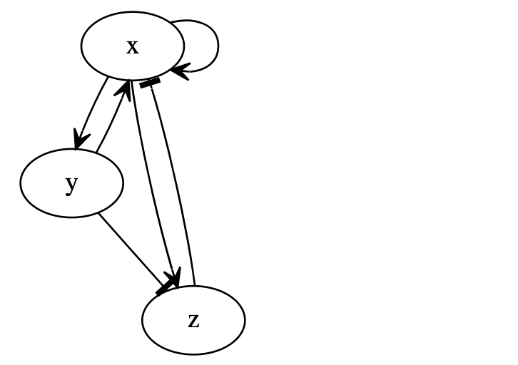

Computational Homology Project (CHomP)The application of algebraic topology to large data sets from experimental data or generated by numerical computations requires efficient algorithms and software capable of computing Betti numbers, homology groups, persistent homology and induced maps on homology. The development of these tools is central to the Computational Homology Project. |
|  |
Dynamic Signatures Generated by Regulatory Networks (DSGRN)We are developing a mathematical framework for the identification, characterization, and classification of dynamics of networks given minimal quantitative information. Researchers currently mine large data sets and use statistics to determine correlations and suggest causation. The results are often recorded as a network where nodes represent ‘agents’ and edges indicate ‘information’ transfer leading to activation or repression. What this ‘information’ is or how it is transmitted is often poorly understood. Typically the physical mechanisms leading to activation or repression are not known. Yet, characterizing or controlling the dynamics of these networks is essential. Our immediate motivation arises from the analysis of the dynamics of signal transduction/gene regulatory networks, where the agents are proteins, genes, mRNA, etc., and the edges are related to bio-chemical reactions, transport, etc. Understanding the associated dynamics is at the heart of systems biology and essential for scientific hypotheses regarding genetic/proteomic function, which could one day be used to suggest drug targets or treatment options which either repair or disrupt biologically relevant dynamical behaviors. However, since our focus is on the mathematical and computational challenges, the resulting techniques will be broadly applicable, including ecology, social networks, economics, communication systems, etc. The principal methodology of this project is to produce databases of "Dynamic Signatures": massive databases that link network structures with a combinatorial/algebraic topological description of experimentally observable global dynamics over all of parameter space. The databases generated by DSGRN can be visualized with the DSGRN Visualization Tool. |
DSGRN Visualization ToolThis application is a visualization tool for Dynamic Signatures Generated by Regulatory Networks (DSGRN), a software package to explore the dynamics generated by a regulatory network. The input to DSGRN is a regulatory network and the output is a database representing the dynamics of the network across all parameter space. To use this application a JSON database with the results from DSGRN is needed. Instructions on creating one are available on the DSGRN repository. You can upload your own database generted by DSGRN or select one of the available databases. |
Conley Morse Graph Database (CMGDB)In this project, a generally applicable, automatic method for the efficient computation of a database of global dynamics of a multiparameter dynamical system is developed. An outer approximation of the dynamics for each subset of the parameter range is computed using rigorous numerical methods and is represented by means of a directed graph. The dynamics is then decomposed into the recurrent and gradient-like parts by fast combinatorial algorithms and is classified via Morse decompositions. These Morse decompositions are compared at adjacent parameter sets via continuation to detect possible changes in the dynamics. The Conley index is used to study the structure of isolated invariant sets associated with the computed Morse decompositions and to detect the existence of certain types of dynamics. |